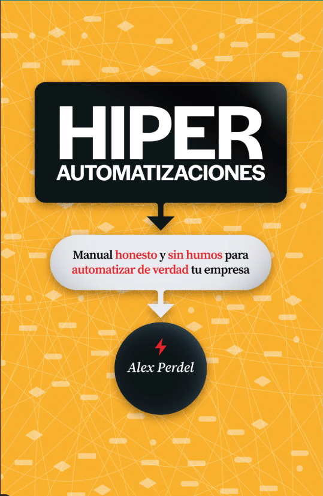

Pensar antes de construir
Cómo se piensa una automatización antes de escribir código —o antes de encargárselo a alguien—. Lo que hay que haber hecho a mano antes de automatizarlo.
Manual honesto y sin humos para automatizar de verdad tu empresa

La mayoría de las automatizaciones no se caen por la tecnología.
Se caen antes: en la reunión donde todo el mundo sabía que aquello no iba a salir y nadie dijo nada. En el proceso que se automatizó sin que nadie lo hubiera hecho nunca a mano. En el «esto se hace en un rato».
No es un libro sobre herramientas. Es un libro sobre criterio.
Directivos, propietarios, consultores, responsables de innovación y todo el que se juega presupuestos y equipos en proyectos de IA, RPA y agentes.
Una palabra que se ha convertido en un cajón donde caben cinco cosas distintas. El libro empieza abriéndolo.
Automatización
Que una máquina haga una tarea que antes hacía una persona, sin supervisión constante y siguiendo reglas claras. Mandar un email cuando alguien rellena un formulario.
Hiperautomatización
Lo mismo, pero encadenando varios sistemas, con más de una decisión automática y, a veces, con IA decidiendo lo que un condicional clásico no cubre.
Y todo antes de que el comercial haya abierto el ordenador. Lo que la define no es la herramienta: es cuántos sistemas hablan entre sí y cuánta decisión se delega en la máquina.
Lo que vas a saber hacer el lunes por la mañana.
Cómo se piensa una automatización antes de escribir código —o antes de encargárselo a alguien—. Lo que hay que haber hecho a mano antes de automatizarlo.
Las señales que aparecen meses antes del entierro: el kickoff épico, el «casi listo» que dura ocho meses, la métrica que solo sirve para el comité.
Dónde va un humano en el bucle, qué cuesta de verdad en tokens y cuándo cerrar en vez de seguir mejorando.
Sale a finales de 2026.
Que no se te pase: te aviso el día que esté a la venta.
La Parte I se puede saltar quien ya la sepa. Las Partes II y IV son las que incomodan.
El vocabulario mínimo. Sin esto, la conversación con tu equipo o tu proveedor es un malentendido caro.
Por qué fracasan los proyectos. Una trampa por capítulo, con la escena real, el patrón nombrado y qué hacer el lunes por la mañana.
Cómo se hace bien. Del POC al MVP, escalar sin espagueti, cuándo delegar en el modelo y cuánto cuesta de verdad.
Lo que un máster no te enseña: la parte política. Los cuatro capítulos llevan cicatriz propia obligatoria.
Además: un prólogo que empieza por lo que este libro no es · un epílogo corto con la primera pregunta para el lunes, vengas de donde vengas · y cuatro apéndices — glosario ampliado, herramientas mencionadas, recursos y lecturas, y fuentes.
Hoy dirige. Y llegó a dirigir habiendo construido.
Alex Perdel lleva más de una década montando automatizaciones, integraciones y agentes para empresas que no se parecen en nada entre sí. Primero con sus propias manos, después coordinando equipos, y hoy como Chief Growth & Transformation Officer en Grupo Cuidacasa, sentado en el comité de dirección.
Ese recorrido —de negocio a tecnología, y de construir a dirigir— es lo que hace este libro incómodo en las dos direcciones: conoce los proyectos que se caen desde el lado de quien los firma y desde el lado de quien se los come. El espejo del libro tampoco le absuelve a él.
Enseña sobre esto mismo en dos másteres de EBIS Business Techschool. Y el dato que sostiene el libro no es el cargo: dirige una decena larga de proyectos y están todos en producción. Ninguno es un piloto — que es justo la enfermedad que el Capítulo 5 denuncia.
Hiperautomatizaciones es su primer libro.
A finales de 2026, en Amazon: tapa blanda de 280 páginas a 24,95 € y Kindle a 9,99 €. Si te apuntas a la lista, te aviso el mismo día que esté a la venta.
No. Está escrito para quien decide, encarga o dirige proyectos de automatización. Cuando aparece algo técnico, se explica en una línea y con un ejemplo.
Las nombra cuando hace falta, pero no es un tutorial: no hay capturas de pantalla ni versiones. Las herramientas cambian cada trimestre; cómo se piensa un proyecto, no.
Encadenar varios sistemas con más de una decisión automática y, a veces, con IA decidiendo lo que una regla fija no cubre. El capítulo 1 lo explica a fondo, con los cinco tipos que existen.
Alex Perdel, Chief Growth & Transformation Officer en Grupo Cuidacasa y docente en dos másteres de EBIS Business Techschool. Lleva más de una década montando automatizaciones y agentes en producción.
Un correo. El día que salga. No hay newsletter detrás, ni secuencia de bienvenida, ni nada que no hayas pedido — y te puedes borrar de un clic.
Sin seguimiento comercial, sin cesión a terceros y sin correos semanales que nadie pidió.